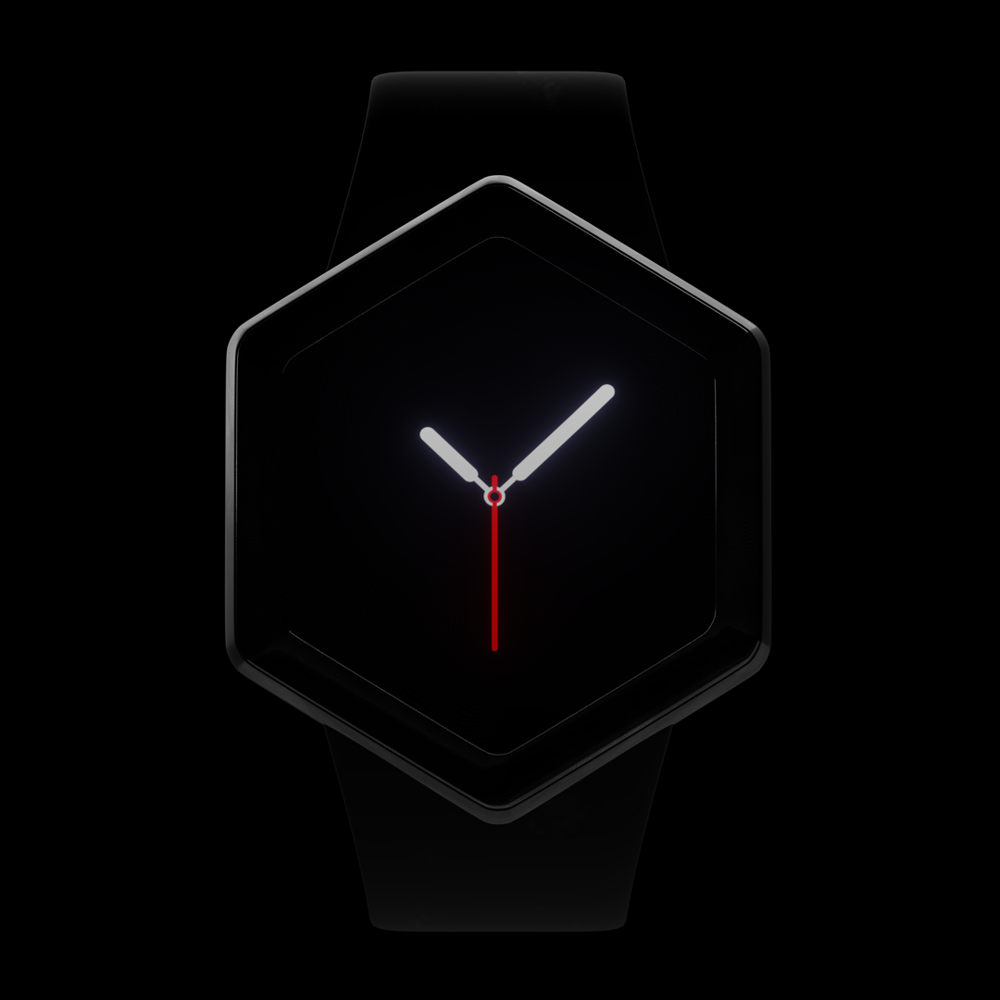

2022
Durant un cours de design d'interface, nous avons eu à choisir un proche et à réaliser pour lui trois cadrans de montre connectée correspondant à ses goûts et à ses besoins. J'ai décidé de me lancer un défi supplémentaire en imaginant une montre à cadrans hexagonaux en clin d'œil à son pays d'origine, la France. Je me suis inspiré de son amour pour la culture française, le sport et le jeu vidéo pour créer des designs uniques et originaux. Cet exercice m'a permis de mettre en pratique mes compétences en design et 3d, tout en explorant de nouvelles idées et en m'amusant.
visiter le site de french.e-watch L'interface et animation des cadrans a été réalisé sur logiciel Figma, et en ce qui concerne la montre elle a été modélisée sur le logiciel Blender.